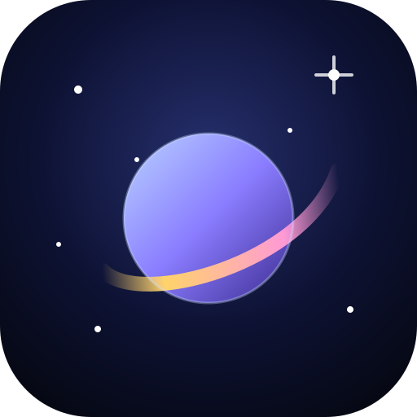

Interstellar LensPoint your phone. Know the sky.
Interstellar Lens is made for your phone. It uses your camera, compass and motion sensors to label the real sky — planets, stars, constellations, deep-sky objects and satellites, live.
Interstellar Lens is an independent astronomy app, not affiliated with any film or studio.